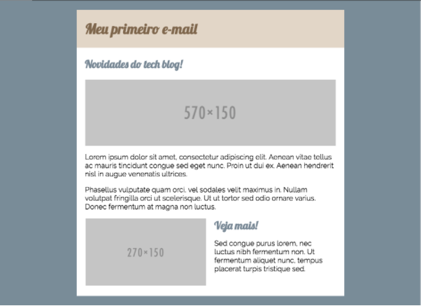

Técnicas para codificar um e-mail - parte 4
Publicado em:
@erikatakahara
No terceiro post da série, aprendemos a criar e-mails com conteúdos em colunas e a como deixá-las responsivas. Nesse, iremos comentar sobre algumas dicas gerais e sobre fontes customizadas.
Table x Div
Por que ainda usamos a table ao invés de div? A div é bem mais simples e não precisa criar linhas e colunas como a tabela, então por que não usar div's?
Apesar das div's serem bem aceitas para a maior parte dos clientes de e-mail, ela ainda não é bem suportada para o Outlook 2007/2010/2013, nos quais algumas propriedades de CSS só funcionam para td. Caso não queiramos suportar esse cliente, podemos substituir tranquilamente todas as tabelas, deixando o nosso código mais simples e enxuto.
No nosso exemplo de e-mail, para que o limitador de largura funcione no Outlook seria necessário adicionar uma condicional:
<!--[if (gte mso 9)|(IE)]>
<table cellspacing="0" cellpadding="0" width="600">
<tr>
<td>
<![endif]-->
<div style="max-width: 600px;">[...]</div>
<!--[if (gte mso 9)|(IE)]>
</td>
</tr>
</table>
<![endif]-->
Dessa forma, quando acessada por esses clientes, exibiria uma tabela adicional que limita a largura para 600px.
Fontes customizadas
Muitas vezes, como programador front-end, nos deparamos com um layout de um e-mail com uma fonte diferente dos padrões dos navegadores, seja para manter um padrão com o site ou até mesmo para melhorar a experiência dos nossos usuários usando a tipografia.
Entretanto, como sabemos, o HTML e CSS que usamos para montar o e-mail são arcaicos e isso não funcionaria no e-mail, certo? O que nos resta é discutir com os designers para alterar a fonte e usarmos o padrão (arial, verdana, tahoma, etc), ou até mesmo podemos transformar os textos em imagens para que o e-mail fique igual ao mock. Mas será que, com a evolução da web, não conseguimos mudar um pouco esse paradigma? Será que não seria possível usar uma fonte customizada, como usamos atualmente em nossos sites?
Assim como os nossos navegadores evoluem e passam a dar suporte a novas propriedades, os clientes de e-mail também seguem essa tendência, só que em um passo bem mais lento. E aqui vai uma boa notícia, uma das propriedades já suportadas são a customização de fontes!
Com isso é possível utilizar fontes como a Open Sans, Lobster, Museo Sans, entre outras nos nossos e-mails. Segue a lista de clientes de e-mail que suportam essa customização:
- OS Mail
- Apple Mail
- Android (o aplicativo padrão, não o aplicativo do Gmail ou Inbox)
- Outlook 2000
- Outlook.com App
- Thunderbird
No código, podemos importar essas fontes de três formas. Vou usar como exemplo uma fonte do Google Fonts:
@font-face
Declarar dentro da tag style no head a propiedade @font-face:
@font-face {
font-family: 'Lobster';
font-style: normal;
font-weight: 400;
src: local('Lobster'), local('Lobster-Regular'), url(https://fonts.gstatic.com/s/lobster/v18/MWVf-Rwh4GLQVBEwbyI61Q.woff) format('woff');
}
@import
Usar o clássico @import do CSS apontando para o arquivo com as declarações da fonte desejada.
@import url('http://fonts.googleapis.com/css?family='Lobster');
Mas não é suportado no Android 2.3 e no AOL acessando pelo IE11.
<link>
Ou podemos simplesmente adicionar a tag link apontando para o arquivo com as declarações de @font-face da fonte desejada.
<head>
<link href="http://fonts.googleapis.com/css?family=Lobster" rel="stylesheet" type="text/css">
</head>
Agora, é só usar a propriedade font-family como fazemos na web. Lembrando que é sempre bom ter um fallback para as fontes, já que nem todas as fontes funcionarão em todos os clientes, e de preferência que tenham um aspecto parecido ou ao menos uma largura semelhante a sua fonte customizada, para não comprometer o layout quando o fallback for usado.
<h1 style="font-size: 2em; font-family: 'Lobster', sans-serif; color: #7F674D">Meu primeiro e-mail</h1>
Aplicando essas mudanças, nosso e-mail ficaria com o seguinte aspecto:

Dicas
-
É sempre bom colocar comentários separando blocos, para se organizar. Por exemplo:
<!-- cabeçalho --> <table>[...]</table> <!-- /cabeçalho --> -
Sempre indente o código para saber exatamente onde as tags estão sendo abertas e fechadas. Isso ajuda bastante no momento de inspecionar para encontrar erros de fechamento de tag.
-
Use alguma ferramenta para testar a visualização do e-mail. Hoje já temos ferramentas como Litmus que ajuda nesse processo.
-
Não reencaminhe o seu e-mail para testar em outro cliente, muitas vezes ocorrem alterações que acabam não refletindo a realidade. Por isso, sempre envie diretamente o e-mail.
Conclusão
Com as mudanças dos clientes de e-mails, ficou bem mais fácil desenvolver e-mails responsivos. Principalmente com o suporte a tag style no cabeçalho, será possível abandonar o uso do css inline e passar a utilizar seletores nos e-mails, facilitando a manutenção e organização do nosso código.
Recomendo os artigos da Campaign Monitor, MailChimp e Litmus, que têm várias dicas para elaboração de e-mails.. Segue alguns links que usei de referência para esse post:
- https://www.campaignmonitor.com/blog/email-marketing/2011/10/using-phone-numbers-in-html-email/
- https://www.emailonacid.com/blog/article/email-development/css-animations-part-1
- http://kb.mailchimp.com/ways-to-build
- https://www.campaignmonitor.com/css/
- https://www.campaignmonitor.com/resources/guides/web-fonts-in-email/
- https://github.com/seanpowell/Email-Boilerplate
Obrigada! =)